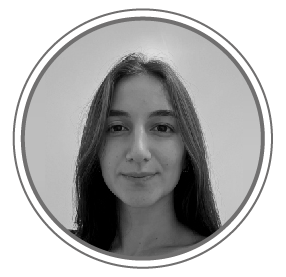

Diseñadora
Integral
¡Hola!
Soy Candela Kalipciyan
Soy Candela Kalipciyan
Soy licenciada en Diseño Integral. Qué es eso? Los diseñadores integrales vemos mas allá de lo que es el producto final, pensamos en el diseño como la solución a un problema a partir de múltiples disciplinas desde lo gráfico, a lo industrial, lo inmersivo y la programación.
GRÁFICO - INDUSTRIAL - INMERSIVO - UX - WEB
SOBRE MI

Soy una apasionada del diseño integral, Licenciada en Diseño Integral de la Universidad
Torcuato Di
Tella. Durante mi formación académica, me especialicé en áreas como diseño gráfico, diseño industrial y
diseño de interacción, adquiriendo una sólida base teórica y práctica.
Además de mi formación universitaria, fui complementando mis habilidades realizando de cursos especializados en Desarrollo Web y JavaScript en la plataforma Coderhouse. Estos cursos me permitieron adquirir un profundo conocimiento de las tecnologías clave utilizadas en el diseño web, y desarrollar habilidades técnicas para la creación de sitios web interactivos y funcionales.
Iniciando mis practicas laborales, realice pasantías y trabajos independientes en el ámbito del diseño gráfico, y el modelado virtual. A través de estas experiencias, tuve la oportunidad de colaborar con profesionales de la industria trabajando en proyectos que abarcan desde el diseño de logotipos y materiales promocionales, hasta la creación de modelos en 3D para productos.
Mi enfoque en el diseño integral se basa en la combinación entre estética , funcionalidad y utilidad. Creo firmemente en comprender las necesidades del usuario y utilizar el diseño como una herramienta para resolver problemas y mejorar la experiencia humana. Me apasiona explorar nuevas ideas, investigar las últimas tendencias y experimentar con diferentes enfoques, con el fin de crear soluciones innovadoras y significativas.
Además de mi formación universitaria, fui complementando mis habilidades realizando de cursos especializados en Desarrollo Web y JavaScript en la plataforma Coderhouse. Estos cursos me permitieron adquirir un profundo conocimiento de las tecnologías clave utilizadas en el diseño web, y desarrollar habilidades técnicas para la creación de sitios web interactivos y funcionales.
Iniciando mis practicas laborales, realice pasantías y trabajos independientes en el ámbito del diseño gráfico, y el modelado virtual. A través de estas experiencias, tuve la oportunidad de colaborar con profesionales de la industria trabajando en proyectos que abarcan desde el diseño de logotipos y materiales promocionales, hasta la creación de modelos en 3D para productos.
Mi enfoque en el diseño integral se basa en la combinación entre estética , funcionalidad y utilidad. Creo firmemente en comprender las necesidades del usuario y utilizar el diseño como una herramienta para resolver problemas y mejorar la experiencia humana. Me apasiona explorar nuevas ideas, investigar las últimas tendencias y experimentar con diferentes enfoques, con el fin de crear soluciones innovadoras y significativas.
ESTETICA
+
FUNCIONALIDAD
+
USABILIDAD
PROYECTOS
AUA
GESTION
Un proyecto nuevo encarado desde la gestión de un proyecto de diseño, que propone la reducción de la compra de botellas de agüa, con una opción mas económica para los usuarios. El proyecto está orientado para, a su vez, generar altos niveles de ingresos para los inversores
CARGADOR YA
UI
En base a un estudio realizado en grupo, detectamos un problema sobre la
carga de dispositivos móviles en la vía pública. En este proyecto, creamos una red
de reserva y uso de cargadores de telefonos en bares y cafeterias, llevando al usuario a su cargador,
y brindando clientes al lugar de carga.
DI GRAM
GRAFICO
En el siguiente proyecto se trabajó con la iconocidad y la abstracción.
Partiendo del uso de una grilla creada por módulos de igual tamaño, se generaron nuevos módulos
repetitivos que formarían composiciones bajo la
temática de la arquitectura yendo de las más icónicas a las más abstractas,
permitiendo nuevas composiciones al combinarlas.
SOMOS
GRAFICO
Bajo un análisis del director ícono de cine de acción, Martin
Scorsese, se creó la gráfica de un ciclo de cine que destaca lo mejor de la fotografía de
sus películas transformandolas en una reversion del Siglo XXI. Un proyecto que constó de la
fabricación de piezas en 3 diferentes instanciasÑ antes, durante y después del evento.
ECO RAPPI
INDUSTRIAL
En este proyecto sobre sostenibilidad, trabajamos en
equipo para buscar una alternativa a los envases plásticos para el delivery de comida por
aplicaciones. Trabajamos desde el punto de vista material y logístico, para actuar como interventor
entre el consumidor y el restaurante y creamos un sistema de transporte e higianizacion para el
consumo de alimentos.
INDUSTRIAL
En una iniciativa sobre mobiliario urbano detectamos la
falta de estos en espacios de reunion públicos al aire libre, y decidimos crear un mobiliario que
brinde privacidad, pero a su vez coneccion con el medio ambiente, al momento de reunirse con amigos en
un espacio público.
KEEP GOING
INDUSTRIAL
En este proyecto en equipo, estuvimos buscando y detectando el descarte de
envases plasticos a la hora te consumir cafe en espacios publicos. Para disminuir la huella de
residuos, proponemos un sistema de recarga de cafe en vasos reutilizables, desde la
maquinaria hasta la logística de carga y limpieza.